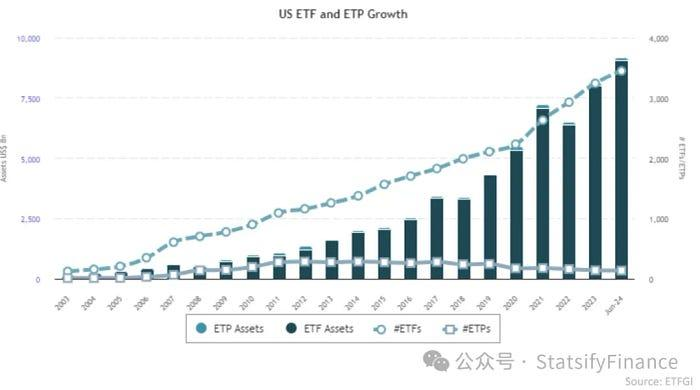
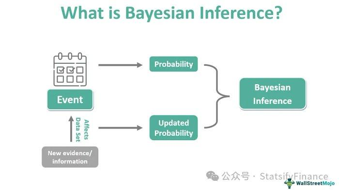

A recent Wall Street Journal story grabbed my attention: Jane Street pays its interns astonishingly high salaries. Curious, I dug deeper and was even more surprised. That led me to study the firm.
Some interns can earn up to $200,000 per year
Company background and culture
Founded in 2000, Jane Street is a global quantitative trading firm focused on algorithmic trading and market making. It is headquartered in New York with offices in London, Hong Kong, and Amsterdam. Jane Street is one of the world's largest ETF liquidity providers, narrowing bid-ask spreads and making ETFs easier to trade. The firm also participates in crypto markets, using quantitative models to navigate high volatility.
Unlike many traditional finance firms, Jane Street emphasizes collaboration and innovation. Traders, programmers, and data scientists work closely to refine models and technology. The firm prizes logical reasoning and mathematical ability, valuing strong academic backgrounds and a deep interest in math. The result is a culture dense with ideas and continuous improvement.
Core business model
Jane Street's core is market making. It continuously quotes buy and sell prices for products such as stocks, ETFs, futures, bonds, and cryptocurrencies, helping markets stay liquid and prices stable so investors can trade efficiently.
The firm relies on mathematical models and high-frequency algorithms that process large data streams and analyze markets in real time to make rapid decisions. In short, Jane Street uses quantitative methods and substantial computing power to capture small price discrepancies and turn them into profits.
Impact of the ETF boom
To understand why Jane Street scaled so effectively, look at ETFs and how their rise shaped the firm.
What ETFs are
An exchange-traded fund lets investors buy a single fund share that represents a basket of assets — stocks, bonds, or commodities. Like a stock, an ETF trades on an exchange with intraday pricing. Investors get stock-like flexibility plus fund-level diversification. Low fees, ease of use, and instant tradability have powered two decades of rapid growth. Global ETF assets now total several trillions, and ETFs are central to modern capital markets.

How did that help Jane Street?
The surge in ETFs expanded Jane Street's opportunity set and pushed its technology forward. As a top ETF market maker, the firm must handle heavy quoting, complex data, and tight risk controls. That pressure drives continual upgrades in trading systems and risk infrastructure.
One distinctive feature of Jane Street's stack is its extensive use of OCaml, a multi-paradigm language with functional, imperative, and object-oriented features. In finance, this is unusual; many firms prefer Python, C++, or Java. Jane Street's choice reflects a focus on correctness and performance.
What models might be in play? The firm does not disclose its models. Based on industry practice in high-frequency and quantitative trading, it likely uses toolkits spanning Bayesian inference, machine learning, and predictive analytics to support market making and risk.
Bayesian inference
Bayesian models update probabilistic beliefs as new information arrives, enabling better decisions under uncertainty.
- Mechanism: Using Bayes' rule, the model ingests fresh data and revises estimates of market conditions, then adjusts strategy as the environment shifts.
- Application: When major economic data hits, a Bayesian model can incorporate real-time order flow and price moves to recalibrate risk and reposition quickly.

Basic logic of Bayesian Inference
Machine learning and black-box models
Many machine learning systems, intricate networks, are hard to interpret. Their decisions emerge from millions of parameters and complex computations rather than simple, transparent rules. That opacity makes precise explanations difficult, even when performance is strong.
Challenges ahead
Rising macro and geopolitical uncertainty can strain liquidity and increase volatility, testing a market maker's stability. Tighter rules around data privacy and cybersecurity require stronger protections for sensitive trading information. In newer asset classes such as crypto, extreme swings demand more adaptive risk management and system redundancy.
Looking forward, the ETF market is likely to keep growing, with more product variety, broader global reach, and technology that lowers costs and raises efficiency. That will draw more institutional investors. For Jane Street, the opportunity set expands, but so do the demands. The firm will need sharper models and even more efficient liquidity management to meet diverse ETF needs in fast-changing markets.